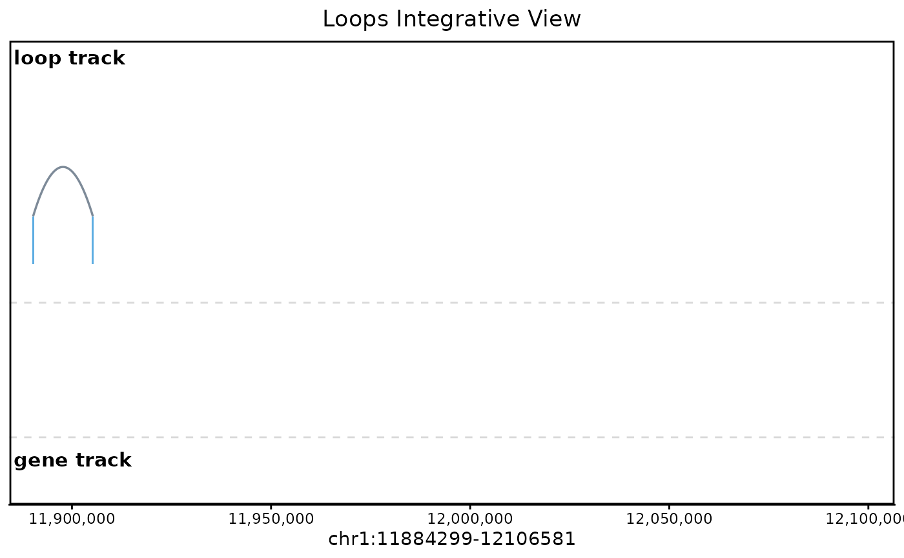

Integrative visualization of 3D chromatin loops and genomic features
Source:R/visualization.R
plot_peaks_interactions.RdGenerates an integrative genomic track plot displaying chromatin loops as arcs, loop anchors as rectangles, optional overlapping features (e.g., ChIP-seq peaks), and annotated genes. Loop arcs can be colored or sized by interaction score (8th column in BEDPE; falls back to 7th if 8th is not numeric).
Usage
plot_peaks_interactions(
bedpe_file,
target_bed = NULL,
chr = NULL,
from = NULL,
to = NULL,
species = "hg38",
txdb = NULL,
org_db = NULL,
show_gene_track = TRUE,
max_levels = 10,
base_anchor_height = 0.05,
loop_color = "#5D6D7E",
anchor_color = "#3498DB",
overlap_color = "#02ABB4",
exon_color = "#2C3E50",
intron_color = "black",
score_to_alpha = TRUE,
min_score = NULL,
save_file = NULL,
interactive = FALSE
)Arguments
- bedpe_file
Character. Path to a BEDPE file (at least 6 columns). If an 8th column is present and numeric, it is used as the interaction score; otherwise the 7th column is tried. If neither is numeric, scores default to 0.
- target_bed
Optional character. Path to a BED file (e.g., peaks) to overlay below the loop track.
- chr
Character. Chromosome name (e.g., "chr8"). If NULL, inferred from the most frequent chromosome in the BEDPE.
- from
Numeric. Start coordinate of the region to plot.
- to
Numeric. End coordinate of the region to plot.
- species
Character. Genome assembly: "hg38", "hg19", "mm10", or "mm9".
- txdb
Optional
TxDbobject or installed package name. WhenNULL, looplook resolves a species-matched transcript annotation.- org_db
Optional
OrgDb/AnnotationDbobject or installed package name used for gene-symbol mapping. WhenNULL, looplook attempts species-matched mapping and otherwise falls back togene_id.- show_gene_track
Logical. If
TRUE(default), render the gene track using the resolvedtxdb. Set toFALSEfor a lightweight loops-only view that skips transcript annotation.- max_levels
Integer. Maximum number of visible vertical levels for loop arc stacking (default: 10). Overlapping loops are separated into stacked bands up to this limit; denser regions are compressed into the available height while preserving relative layering.
- base_anchor_height
Numeric. Height of anchor rectangles (default: 0.05).
- loop_color
Character. Default color for arcs when no score is provided (default: "#5D6D7E").
- anchor_color
Character. Color for loop anchor rectangles (default: "#3498DB").
- overlap_color
Character. Color for overlap track (default: "#02ABB4").
- exon_color
Character. Gene exon fill color (default: "#2C3E50").
- intron_color
Character. Gene intron line color (default: "black").
- score_to_alpha
Logical. Whether to map interaction scores to arc transparency.
- min_score
Optional numeric. Floor value for score mapping.
- save_file
Character. Optional path to save the plot via
ggplot2::ggsave(). When set, the plot is written to this file and the sameggplotobject is still returned.- interactive
Logical. If
TRUE, returns agirafeinteractive plot with hover tooltips on loop arcs, anchors, genes, and target features. Requires the ggiraph package. Default:FALSE.
Value
A ggplot object (or girafe object when
interactive = TRUE). If save_file is provided, the plot is
also written to disk via ggplot2::ggsave().
Examples
bedpe_path <- tempfile(fileext = ".bedpe")
writeLines(
"chr1\t11890000\t11890500\tchr1\t11905000\t11905500",
bedpe_path
)
p <- plot_peaks_interactions(
bedpe_file = bedpe_path,
chr = "chr1",
from = 11884299,
to = 12106581,
show_gene_track = FALSE
)
print(p)
